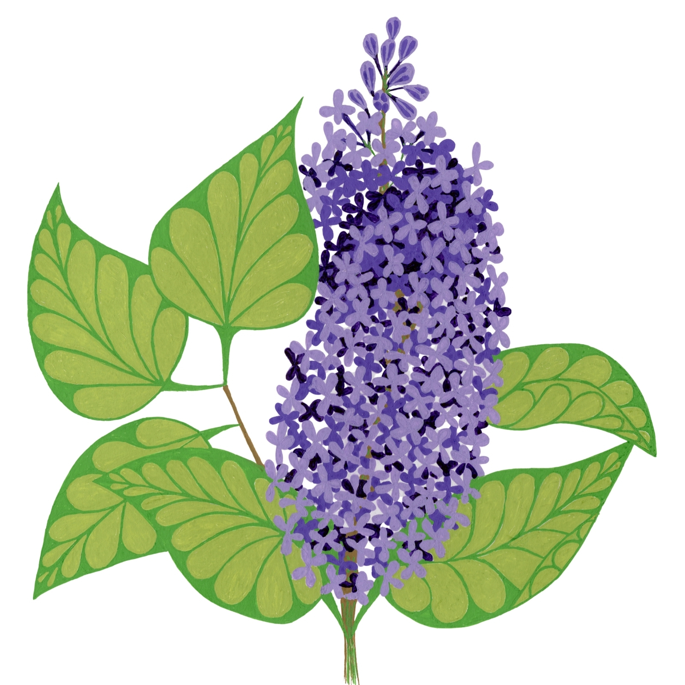
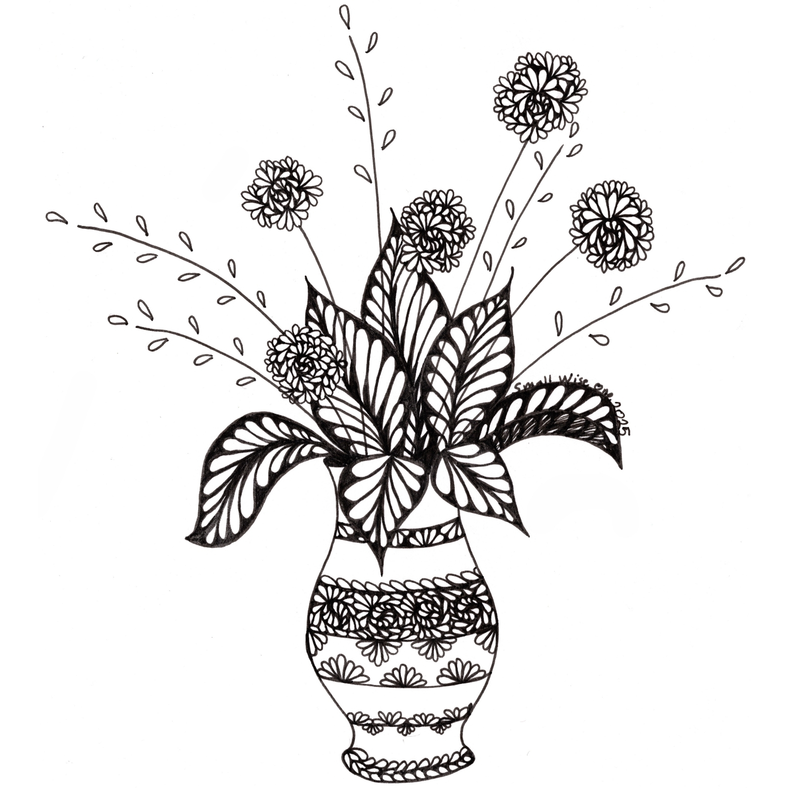
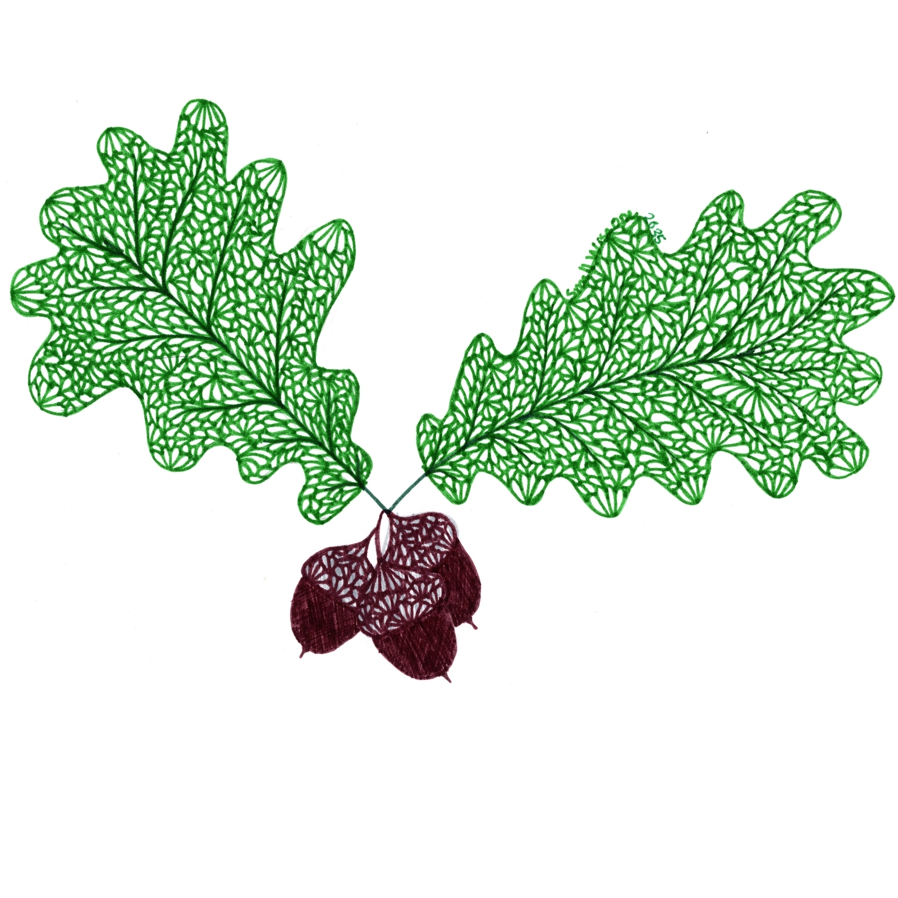

Artwork inspired by nature, wonder, seasonal traditions, and the stories hidden in everyday moments.
I create intricate, story-driven artwork available for licensing across a variety of products and markets.



I create intricate, story-driven artwork available for licensing across a variety of products and markets.


